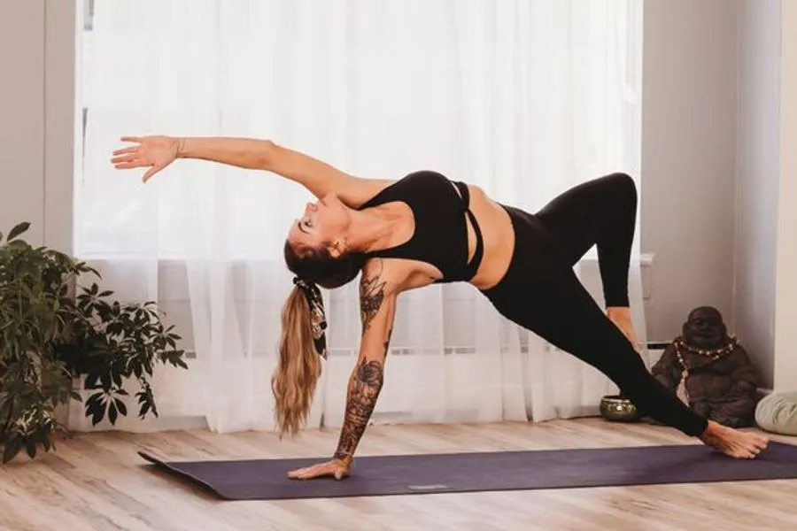

A flowing sequence where every movement is linked to a breath. Expect sun salutations, standing poses and a long, quiet finish.
What to expect
You will be welcomed at the door, shown where to leave your things and offered a mat and any props you need. The room is warm, softly lit and unhurried. Each class begins with a few minutes of settling and ends with a rest.
What to bring
Comfortable clothes you can move in, a water bottle and, if you like, your own mat. We provide everything else, including blocks, straps and blankets.
Is it right for me?
This class is rated all levels. If you are unsure, arrive ten minutes early and talk to your teacher. Every body is welcome and every pose has a gentler option.